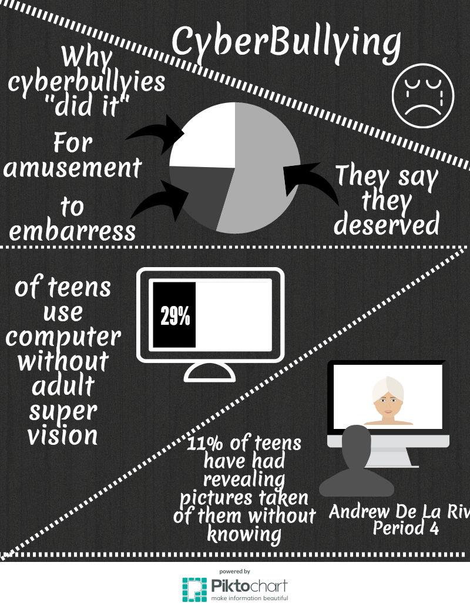
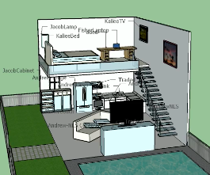

ATM is the elective that teaches middle-schoolers almost everthing about computers. ATM stands for Applied Technology Magnet, it is a 3 year commitment. The program will range from typing to 3D printing, and it is probably one of the best programs to get into
| 6th Grade ATM | 7th Grade ATM | 8th Grade ATM | |
|---|---|---|---|
| Typing | SketchUp | Khan Academy | |
| Microsoft Word | Photoshop | Visual Studio Code | |
| Microsoft PowerPoint | Illustrator | General Assembly Dash | |
| Microsft Excel | Floorplanner | Github | |
| Typing.com | Indesignt | Garage Band |
This is my typing test from 6th grade, this test is to show our growth in typing and since 6th grade I have definitely increased. I have increased my typing speed since 6th grade (which is currently 60WPM), but nevertheless there is always room for improvement.
During 7th grade we used a lot of programs, but none were nearly as fun as SketchUp, in this program we are able to create 3D models of almost anything you can imagine. This project had me and my group create an apartment, each person was in incharge of different piece of furniture and these pieces would create our apartment.
We created our first website but didn't actually publish it onto the interent. We were able to choose one of 2 themes, cats or dogs. I chose cats (as you can see by the heading), we had to choose a color scheme, insert a video and images, and we had to write about cats or dogs
I believe ATM is the best elective because it is giving you a boost into the future because our future is going to be nothing but computers. It also opens up a bunch career opportunities because not very many people nowadays know anything about technology. Overall it is just a really fun program because you get to 3D print and use computers. It makes students use their brains because you have to memorize a bunch of codes and it will hel work on your thinking skill. The ATM program is a great elective and I would recomend it to everyone.